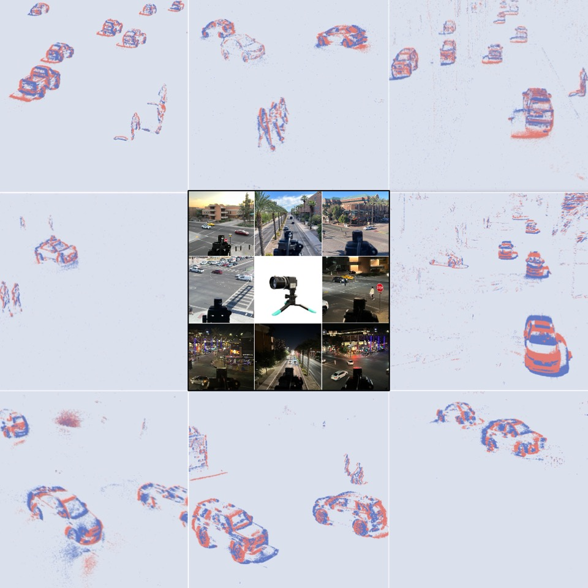
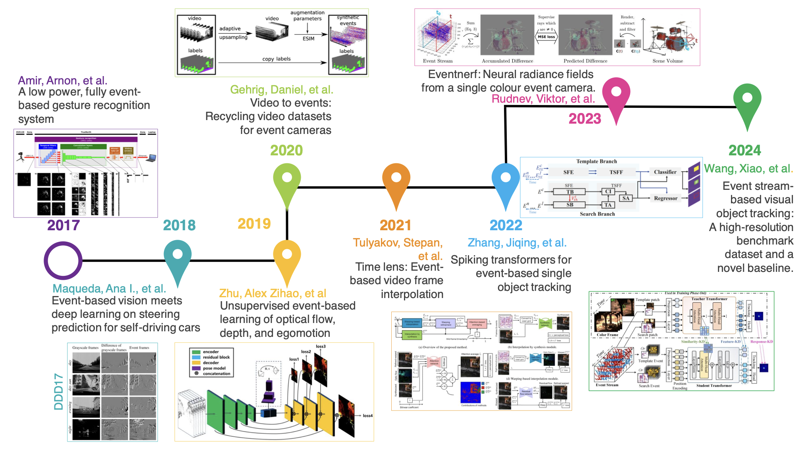
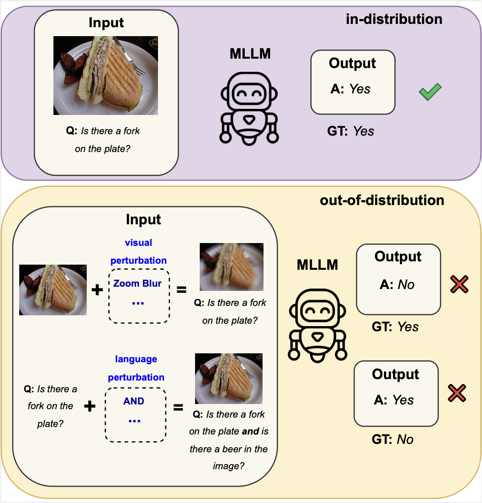
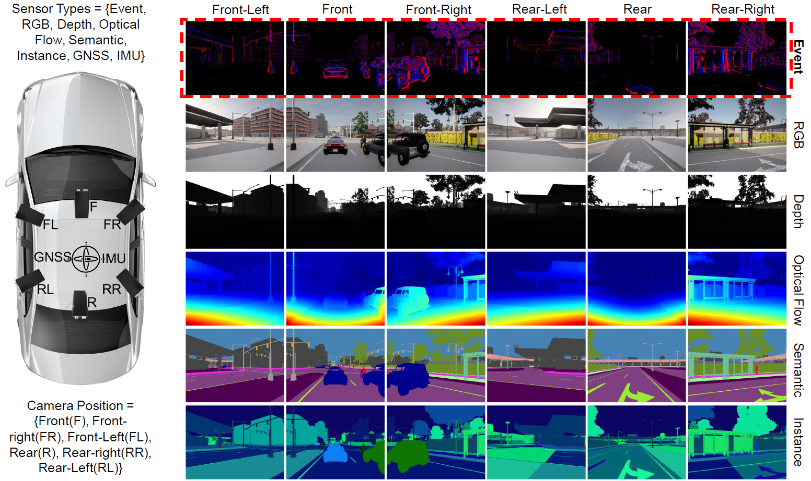

|
Aayush Atul Verma I'm a PhD student at the ASU Active Perception Group, where I am guided by Dr. Yezhou Yang. My research interests lie in the field of computer vision, especially in neuromorphic vision and generative models. I am particularly interested in exploring the temporal dynamics of these modalities and investigating how they can be integrated with both visual and non-visual data, such as text, to enhance perception and motion understanding. I earned my Master's degree in Computer Science from Arizona State University in 2024, following my Bachelor's degree in Computer Science from Birla Institute of Technology and Science, Pilani (BITS Pilani) in 2021. Prior to starting my Master's, I spent a year working at Postman, where I gained valuable industry experience. |

|
News
|
ResearchImportant papers are highlighted. |
|  |
eTraM: Event-based Traffic Monitoring Dataset
Aayush Atul Verma*,
Bharatesh Chakravarthi*
Arpitsinh Vaghela*,
Hua Wei,
Yezhou Yang
IEEE/CVF Conference on Computer Vision and Pattern Recognition (CVPR), 2024 (Highlight Paper)
|
|  |
Recent Event Camera Innovations: A Survey
Bharatesh Chakravarthi,
Aayush Atul Verma,
Kostas Daniilidis,
Cornelia Fermuller,
The 18th European Conference on Computer Vision ECCV 2024 Workshop (NeVi), 2024
Yezhou Yang |
|  |
Evaluating Multimodal Large Language Models across Distribution Shifts and Augmentations
Aayush Atul Verma*,
Amir Saeidi*, Shamanthak Hegde*, Ajay Therala*, Fenil Denish Bardoliya*, Nagaraju Machavarapu*,
Shri Ajay Kumar Ravindhiran*, Srija Malyala*, Agneet Chatterjee*, Yezhou Yang, Chitta Baral
IEEE/CVF Conference on Computer Vision and Pattern Recognition Workshop (CVPRW), 2024
|
|  |
SEVD: Synthetic Event-based Vision Dataset for Ego and Fixed Traffic Perception
Manideep Reddy Alimanti*,
Bharatesh Chakravarthi*,
Aayush Atul Verma,
Arpitsinh Vaghela,
Hua Wei,
Xuesong Zhou,
Yezhou Yang
IEEE/CVF Conference on Computer Vision and Pattern Recognition Workshop (CVPRW), 2024
|
|
I sincerely thank Jon Baron for developing and open sourcing the web layout. |